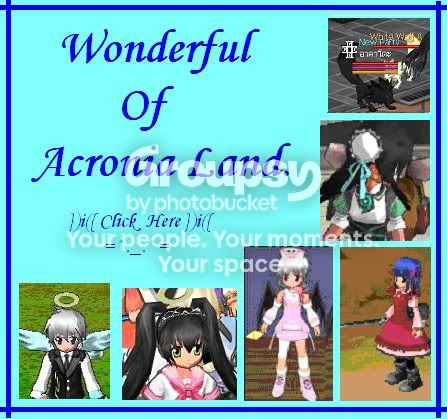
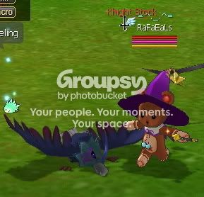

xiahjunsu เขียน:xiahjunsu เขียน:
สารบัญ
ตอนที่ 1 กำเนิด Acornia Land.
ตอนที่ 2 อาคาโดะหมาป่าสีดำ
ตอนที่ 3 Ginny กัผม
ตอนที่ 4 อดีตของ อาคาโดะ
ตอนที่ 5 ไป Up Town กันเถอะ
ตอนที่ 6 บัตรของอาคาโดะ
ตอนที่ 7 อาชีพเยอะจางเลยคับ >.<
ตอนที่ 8 การเปลี่ยนเป็น Warlock ของอาคาโดะ
ตอนที่ 9 เสียงของเพื่อนรัก
ตอนที่ 10 เจ้าของเสียงกับหญิงสาวลึกลับ
ตอนที่ 11 คำสาปคลายออก
ตอนที่ 12 พลังที่หลับใหล
ตอนที่ 13 การพบกันของเพื่อนรัก
ตอนที่ 14 ปลดปล่อย Acronia
ตอนที่ 15 Ne ความมืดแห่งความสงบสุข
ตอนที่ 16 การผจญภัยเริ่มขึ้นแล้ว
ตอนที่ 17 ความจริงที่แสนปวดร้าว
ตอนที่ 18 พี่น้องเลือด 3 สี
ตอนที่ 19 ความทรงจำที่หายไป
ตอนพิเศษ
ตอนพิเศษ ความทรงจำที่หายไป
คือเนื้อเรื่องของเรานี่จา อ้างอิงจากในเกมก็คือ จาแต่งนิยายที่เป็น Guide สำหรับผู้ที่เพิ่งเล่น+ผู้ที่เล่นอยู่แล้ว และจาเป็นการ์ตูนที่ ทุกๆคนสามารถมีส่วนร่วมในการต่อเติมเสริมบทของตัวเองได้ (น่าสนมะคุๆ)
แล้วก็การผจญภัยแบบไร้ขอบเขตในดินแดนที่ชื่อว่า Acronai
มาโพลสกานได้เลย
สิ่งที่เราต้องการมีดังนี้
รับทุก Sv. ขอรับ
ชื่อของตัวละคร - เอาหรูๆนะ ไม่ใช่ สมชาย สมหญิง ไม่ไหว (ขอชื่อในเกมนะคับ)
เพศคับ - หญิงชายได้หมดเลยนะ
ลักษณะนิสัย - บรรยายมานะคับ ตามใจชอบ เวอร์เลยนะ
ลักษณะรูปร่างหน้าตา - ขอให้ลงรูปไว้ด้วยจาดีมากเลย (ในเกมอ่ะนะคับ)
ที่มาของตัวละคร - เชิญคุนเล่าประวัติตัวเองให้เต็มที่ จะมา มิกซ์ กานให้กาจายเลย
ขอแบบเวอร์จาดีมากเลยคับ
อาชีพของตัวละคร - เรารับหมด แล่ะน้าส์
เลเวลปัจจุบัน - เวลไรก็กรอกมาตามจิงนะคับ
อาวุธที่ใช้ - อะไรก็ได้เช่น ไม้เสียบลูกชิ้นก็ได้
สกิล - อานนี้สำคัญมาก มีเท่าไหร่ยัดมาให้หมด เวอร์ก็ได้นะคือนอกเหนือจากในเกมน่ะ (การ์ตูนเรื่องนี้มานจาเปงไงนะเนี่ย)
สัตว์เลี้ยง - จามีหรือไม่ก็ตามใจ
และสุดท้ายบทที่ต้องการ - เราให้คุนกำหนดที่วิตของคุนเองและคราวนี้
บทที่เราต้องการ
บทไหนก็ได้ที่คุณต้องการเพราะเราให้คุณกำหนดบทของตัวเอง
ไคคิดว่าอยากเปงดารา ที่ ง่ายสุด เพียงส่ง รูปในเกมพร้องกรอก ส่วนบนให้ครบถ้วน
คุนก็มีสิทธิ์ได้ร่วมสนุกกะเราแล้ว
ตัวละครที่รับสมัครแล้ว
1.อาคาโดะNegima_213 เขียน:Negima_213 เขียน:ชื่อในเกม :อาคาโดะ
ชื่อเล่น :อาคาโดะคุง
อายุ :15 ปี
เพศ :ชาย
เผ่า :ปีศาจ
เล่นเป็นตัวหญิงหรือชาย :ชาย
ต้องการรับบทเล่นเป็น :หมาป่าดำที่สำคัญหน่อย
เลเวล :48 จ็อบ:21
อาชีพปัจจุบัน :Necromancer
ขอภาพหน้าตัวละครท่านมาลงด้วยนะคะ :
เซิร์ฟเวอร์ :ทาโกยากิ
ลักษะเด่นของตัวละครท่าน :เป็นหมาป่าดำที่ขี้เล่นผิดกับพวกเพื่อนๆจึงไม่สามารถอยู่กับเพื่อนๆได้จึงต้องมาอยู่ร่วมกับมนุษย์
เวลาที่ออนบ่อย :วันจันทร์-ศุกร์ 19:00~21:00
งิงิหล่อมิขอเปงหมาป่าที่สามารถพูดได้ด้วยนะแล้วถ้าหัวหน้ากระทู้นำไปเลี้ยงจะดีอย่างยิ่งเลยครับ ^^"
ปล.ที่มาหมาป่าทองกับผีอยู่นั้นขอให้ผมสหายผมล่ะกานหนอ
สัตว์เลี้ยงคือหมากับผีสองตัวนั้นนะ
2.GinnySypiaProf.Peary เขียน:ชื่อของตัวละคร - GinnySypia
เพศ - หญิง
ลักษณะนิสัย - น่ารักแต่โหด ใครด่ามา ด่ากลับ แอบดุ ลามกเล็กน้อย 555+ ฉลาดว้อย (ชื่อทรายว้อย (หึหึ แอบแฝงความหมาย)
ลักษณะรูปร่างหน้าตา -
ประวัติที่มาของตัวละคร - เป็นเจ้าของหมาป่าสีดำ ที่ชื่อว่า อาคาโดะ (555+)เป็นนางฟ้ามาจุติบนโลกมนุษย์ (เว่อร์ -.-)
อาชีพของตัวละคร - Trader
อาวุธที่ใช้ - ค้อนสีน้ำตาล สกิลโหดๆ หมาป่าทองและสีดำ
สกิล - ทุบคนให้กระอักเลือดด้วยค้อนสีน้ำตาลอันมหึมาใช้คู่กับสกิล Super Blow,หมุนหัวคนให้หมุนรอบ 360 องศาแบบนกฮูก ด้วยสกิลเหี้ยม ฉายา Killer Head,สกิลอ้อนคน
ใช้อ้อน (บังคับ)ให้คนทำตามได้ ขึ้นกับอารมณ์ของผู้ใช้สกิล ฉายา Angle Human
สัตว์เลี้ยง - ตัววุ้นเล็กๆสีม่วงๆ (*.*) , หมาป่าสีทอง และสีดำสุดเท่
และสุดท้ายบทที่ต้องการ - เจ้าของหมาป่าสีดำและสีทอง มาจากเมืองฟาอีส เพื่อผจญภัยร่วมกับสัตว์เลี้ยงและเพื่อนใหม่ๆ
3.Rafaelsxiahjunsu เขียน:ชื่อ : Rafaels
เพศ : ชาย
เผ่าพันธุ์ : Titania
อาชีพ : Druid
Level : 52/21 (ในเกมน้าส์)
นิสัย : เป็นคนที่ภายนอกดูสดใสร่าเริง แต่ภายในนั้น เป็นคนที่มีแต่ความเศร้าเก็บไว้ในใจ
แต่เป็นคนมีน้ำใจ และใจกว้างเพราะว่าไม่อยากให้คนอื่นนั้น ต้องประสบพบ บางสิ่งบางอย่างเหมือนกับตนเอง สิ่งนั้นคือ.......
ลักษณะ : น้ำหนัก50 สูง180 เลือด โอ
สิงที่ชอบ : ความเงียบสงบ
ความสามารถ : สามารถ รับรู้ความรู้สึกของฝ่ายตรงข้าม ดังนั้นจึงเข้าใจและพยายามที่จะช่วยเหลือผู้อื่นตลอดเวลา มีพลังที่สามารถทำลายล้างทุกอย่างได้ แต่เป็นพลังที่ถูกปิดผนึกเอาไว้
อาวุด : คทา แก้วใส มีผลึกแห่งแสงอยู่ตรงยอดของ คทา
ประวัติส่วนตัว : เป็นเด็กที่เกิดมาพร้อมกับปีกสีขาว และพรสวรรคอันน่าประหลาดที่พระผู้เป็นเจ้าประทานให้มา ครั้งเมื่ออายุยังน้อยนั้นได้เกิดเหตุการณ์ที่ทำให้ เมืองๆหนึ่งต้องดับสิ้นไป เนื่องจากหนูน้อยคนนี้ได้ระเบิดพลังออกมาโดยไม่รู้ตัว จากนั้น หนูน้อยคนนี้ก็ถูกกักขังไว้และถูกปิดผนึกแห่งพลังเอาไว้ในที่ที่มีแต่ความว่างเปล่า จนเวลาล่วงเลยไป และถูกปล่อยตัวออกมา โดยที่ตนนั้นไม่อาจรู้เลยว่าทำไม ถึงต้องถูกกักขังไว้ จนกระทั่ง พลังของเขาเริ่มตื่นขึ้น และเขาก็เริ่มจำเหตุการณ์บางอย่างได้ และเค้ายัง ได้รับพรสวรรค์ใหม่จากพระผู้เป็นเจ้า คือสามารถอ่านความคิดของผู้อื่นได้ แต่พลังที่ถูกปิดผนึกไว้นั้น ยังคลายออกไม่หมด จึงทามให้เขา ยังสามารถดำเนินชีวิต อยู่พร้อมกับปีกสีขาวเอาไว้ได้ และเขายังต้องพยายามที่จะต้องปิดผนึกพลังนี้เอาไว้ เพื่อไม่ให้....เกิดขึ้นมา
สัตว์เลี้ยง : - ไม่มีคับ
บทที่ต้องการ - โหวตมาทีนะคับ (อยากได้บทพระเอกอ่ะคับ)
4.AmethystPnatbutter เขียน:ชื่อของตัวละคร - Amethyst
เพศคับ - หญิง
ลักษณะนิสัย - ชอบช่วยเหลือใครต่อใครอยู่เสมอ เป็นคนเซ้นส์ซืทีฟ หากมีเรื่องกระทบใจล่ะก็ จะร้องไห้จนดูเหมือนเป็นเด็กขี้แง เอาแต่ใจนิดหน่อย พอไม่ได้อะไร อย่างใจก็จะ เกิดอาการ ขี้งอน ขี้บ่น แล้วมักจะเลือกวีนกับคนที่สนิท แม้จะเป็นเรื่องเล็ก ๆ แต่กับคนอื่น แล้วไม่ว่าจะ ยังไงก็ไม่โกรธใครง่าย ๆ
ลักษณะรูปร่างหน้าตา -
ประวัติที่มาของตัวละคร - เป็นตัวละครที่มีที่มาเป็นปริศนาเนื่องจากสูญเสียความทรงจำในวัยเด็กไป
มีความทรงจำเริ่มต้นตอนที่ถูกเลี้ยงดูมาโดยนักบวชแห่งในโบสถ์หอแสง
เมื่อเกิดมาได้ 5 ปีทั้งพ่อและแม่ถูกฆ่าตาย เธอจึงโมโหพลั้งมือฆ่าฆาตกรคนนั้นและด้วยความช็อกจึงทำให้เธอลืมทุกสิ่งไป
ปัจจุบันจึงออกเดินทางผจญภัยเพื่อค้นหาอดีตของตนเองและแก้แค้นผู้ที่บงการสังหารพ่อและแม่
เห็นสีม่วงเป็นสีนำโชค เพราะทุกสิ่งในชีวิตของเธอมักมีสีนี้มาเกี่ยวข้องเสมอ
อาชีพของตัวละคร - Druid
อาวุธที่ใช้ - กีต้าร์ /ร้องเพลง
สกิล - Ares, ร้องเพลงทำให้ดาเมจของเพื่อนเพิ่มขึ้นแต่ของศัตรูลดลง , โจมตีศัตรูด้วยพลังเสียง
สัตว์เลี้ยง - กระต่ายน้อย
และสุดท้ายบทที่ต้องการ - นางรองค่ะ =w=v
(ถ้าไม่ได้ขอบทเพื่อนนางเอก)
ชื่อในเกม •Amethyst• นะคะ *-*
5.Naya Necroyapochan เขียน:NamE Naya Necroya (นายะ เนโครยะ หรือ เรียกสั้นๆว่า เนโคร หรือ เน)
อายุ 15 ปี
เผ่า Dominion
อาชีพ Necromancer
เพศ หญิง
ความสามารถ แสดงละครตบตาเอาตัวรอก เก่ง คิดคำนวณอย่างแม่นยำ สิ่งที่ชอบ กระต่าย หูกระตาย สิ่งที่โมเอะ=0=!
สิ่งที่เกลียด สิ่งที่น่าเบื่อ เกินไป
ประวัติ หญิงนิรนาม ที่ส่วนใหญ่เป็นคนที่ไม่เผยชื่อตัวเอง แต่จะให้เรียกว่า เน เฉยๆ ไม่บอกชื่อจริงๆ แต่รู้จักกันมากในเมืองNorThon เพราะใช้ธาตุมืดช่วยเหลือเด็กๆแถวนั้นบ่อยๆ เน ทำตัวนิ่มๆอ่อนโยน แต่ แข็งแกร่งไม่อ่อนแอ อาศัยกับ ตา – ยายที่โหดร้ายยิ่งนัก ใช้งานประจำและบ่อยครั้ง โดนเฉดหัวออกไปจากบ้าน เมื่อ 5 ปีที่แล้ว(เนื่องจาก พ่อ-แม่ ของเธอ ตายไปตั้งแต่เธออายุ8 ขวบ) ใน เมือง Northon(สะกดถูกป่าวน้า)
อาวุธ Tiny rod (^-^)
Skill
1.Summon Ghost
Summon Undead Monster ประเภทของ Monster นั้น จะเปลี่ยนไปตาม Skill LV
2.Necro Healing
ฟื้นฟูค่า HP ของ Monster ที่เรียกออกมา ด้วยสกิล [Summon Ghost]
3.Summon Death
เรียกเจ้าแห่งความตายออกมาโจมตีเป้าหมาย
4.Necro Resurrection
Passive Skill เมื่ออยู่สภาวะเสียชีวิต มีโอกาสฟื้นคืนชีพได้ เมื่อฟื้นแล้วจะอยู่ในสถานะ Undead ในช่วงเวลาหนึ่ง
Skill Credit www.eco.in.th/information_jobs_necromancer.html
นิสัย อ่อนโยน แต่ไม่อ่อนแอ ยิ้มเสมอ แจ่มใส จนดูเหมือนคนบ้า แต่บางครั้ง เนก็แอบไปนั่งร้องไห้อยู่คนเดียวนักต่อหลายครั้ง มีแต่ เนมิ และ Amethyst ที่เข้าใจเท่านั้น(เนมิ เป็นเนโกะมาตะ(สีพีช)) แต่มักมีคนกลัวเพราะ ดวงตาสีแดงที่เหมือนมีความเเค้นอยู่[
6. มาโกะRIANBOW เขียน:
ชื่อ - มาโกะ
อายุ - 18
เพศ - หญิง
เผ่าพันธุ์ - Emil
อาชีพ - Swordman
นิสัย - แอ๊บแบ๊ว
ประวัติ - หญิงสาวคนหนึ่งที่ฝันอยากจะเป็น BladeMaster เคยลองเปลี่ยนอาชี่พครั้งหนึ่งแต่ก็ไม่สำเร็จจึงไปฝึกฝนตัวเองเรื่อยๆในเมืองเหนือ
*เคยเป็นรุ่นพี่ของ GinnySypia ตอนเรียนอยู่จากนั้นได้แยกทางกันไปเรียนวิชาอื่นต่างๆกันไป
7.Melionar• Em!L!a • เขียน:ขอเพิ่มประวัติหน่อยละกันน้าค้า
ชื่อ - Melionar (เมลิโอน่า)
เพศ - หญิง
ลักษณะนิสัย - ดูเหมือนเปนคนเงียบมาก ชอบใช้หางตาจ้องคนอื่น แต่ความจิงแล้วเปนคนขี้แง รักใครแล้วชอบกวนประสาทคนนั้นแก้เขิน
ลักษณะรูปร่างหน้าตา - ผมสีทองตาสีฟ้า (เกบตังซื้อชุดอยู่ค่า)
ที่มาของตัวละคร - เปนเพื่อนสนิทของอาคาโตะก่อนที่จะถูกสาบ เปนเผ่าทิทาเนียแต่ดันไปอยู่ฝ่ายอาคาโตะเลยถูกสาบให้อายุ 15 ไม่แก่ขึ้น (ถูกสาบหรือได้พรนี่????)
อาชีพของตัวละคร - พระค่ะ
เลเวลปัจจุบัน - 52/7 T_T
อาวุธที่ใช้ - พิน (เปน Druid แต่ขอใช้พินได้มั้ยคะเนี่ย)
สกิล - Healing (ถึงฮิวได้แต่ไม่เคยฮิวให้ใคร!)
Holy light
Holy Groove (ใช้ผมฟได้ดีที่สุดในเซิฟ <มั่วสุดยอด!>)
Die Song (คิดเองนะคะ แหะๆ เปนสกิวที่เวลาเล่นดนตรีคนที่ฟังจะเลือดลดทีละ
เยอะๆประมานว่าเหมือนโดนพิษแรงๆ แต่ใช้ทีเปลืองเอ็มพีมาก)
สัตว์เลี้ยง - เนโกะมาตะ(ชื่อชอนซา) หมาป่าทอง (ชื่ออีสต้า)
บทที่ต้องการ - อยากเปนหนึ่งในผู้กล้าอ่ะ
ต่อไวๆนะคะ
8.GEMSgemszass เขียน:ซาหนุกดีคับ สมัครด้วยได้ไหมคับ :) :lol: :) :lol:
ชื่อ :
LV. - 52/24
Job - Elementaler
นิสัย - ภายนอกอาจจะดูเหมือนเยือกเย็นแต่ที่จริงแล้วภายนัยจิตใจเป็นคนที่จัยดี
ประวัติ - อดีตเจ้าชายแห่งแดนสวรรค์ แต่ม่ายอยากเป็นราชาเพราะชอบการเดินทางมากกว่าจึงสละรัชทายาสให้แก่น้องชาย
บทที่ต้องการ - พี่ชายของ Rafaeal
skill - ท่า blast ทั้งสี่ธาตุ คือ ดิน น้ำ ลม ไฟ
สัตว์เลี้ยง - เนโกะมาตะ ( ยามาบูกิ )
รูปภาพเด๋วมาลงนะ
รับแล้วนะแต่เอ๊ะเผ่าไรอ่ะ
พี่เรางั้นเผ่าเทพนะ
9.MarIaNa•MaIDeNPClimaTack เขียน:ชื่อของตัวละคร - MarIaNa•MaIDeN
เพศคับ - หญิง
เผ่า (ในใบสมัครไม่มี) - Emil
ลักษณะนิสัย - เป็นคนร่าเริง รักสัตว์เป็นที่สุด ชอบเลี้ยงสัตว์ทุกชนิด โดยเฉพาะเนโกะทุกสี
ลักษณะรูปร่างหน้าตา - เร็วๆ นี้
ที่มาของตัวละคร - ไว้ก่อน นึกไม่ออก-*-
อาชีพของตัวละคร - Farmer
เลเวลปัจจุบัน - 10/10 (จริงๆ ยังไม่เปิดตัวเลย-*-)
อาวุธที่ใช้ - ฆ้อนไม้
สกิล - นึกไม่ออก-*-
สัตว์เลี้ยง - Wan Wan
และสุดท้ายบทที่ต้องการ - หนึ่งในผู้กล้าจ้า
ฝากตัวด้วยน้า :P
10.Sobajungsobajung เขียน:ชื่อของตัวละคร - Sobajung
เพศคับ - หญิง
อายุ - 15
ลักษณะนิสัย - เงียบ ดูก้าวร้าว แต่ความจริงค่อนข้างเปราะบาง
ลักษณะรูปร่างหน้าตา - ตาสีแดง ผมสีน้ำตาล
ที่มาของตัวละคร - เป็นเด็กผู้หญิงเผ่าโดมิเนี่ยนคนหนึ่ง ที่เดินทางมาตามหาอดีตของตัวเองที่สูญเสียไปเมื่อ2ปีก่อน
อาชีพของตัวละคร - Warlock [บางเวลาจะแอ๊บเป็นแม่ค้านะ]
เอารูปมาลงด้วยนะคับอย่าลืมนะ
เลเวลปัจจุบัน - 29
อาวุธที่ใช้ - มีดสั้น
สกิล - 1.สายตา ผล ใครจ้องตาเจ๊แกตอนโมโหจะแข็งเป็นหิน 2.เนียน ผล ใครพูดเรื่องยืมเงินก็จะเจอสกิลนี้ (เดินหนีไปดื้อๆ)
สัตว์เลี้ยง - เนโกะโมโม่
และสุดท้ายบทที่ต้องการ - เพื่อนพระเอก หรือ เพื่อนนางเอกก็ได้
11.ArinaFluteจัง เขียน:ขอด้วยนะ งิงิ ^^
ชื่อ : Arina
เพศ : หญิง
เผ่าพันธุ์ : Titania
อาชีพ : Druid
Level : 63/30 ปัจจุบัน
นิสัย : ห่วงพ้องเพื่อน พี่น้อง ไม่ชอบให้มีใครมาว่า ทำอะไรมักไม่คิด
ออกเเนวห้าวๆ เพราะต้องการปกปิดความอ่อนเเอของตนใว้
มีเรื่องสะเทือนใจในวัยเด็ก คือคุณพ่อเสีย เลยไม่ค่อยจะร่าเริงสักเท่าไหร่นัก
ลักษณะ : น้ำหนัก45 สูง160 เลือด เอบี
สิงที่ชอบ : เสียงเพลงของวงซิมโฟนี่ หมายเลข 9
ความสามารถ : สามารถบรรเลงเพลงเเห่งความสุขเเละความสิ้นหวังได้
เป็นผู้ขับกล่อมบทเพลงของเทพเจ้า
อาวุด : พิณคริสตัล ฟลุตเเห่งเเสง
ประวัติส่วนตัว : เป็นลูกสาวคนโตของเเม่ทัพเเห่ง นอร์ท อโครเนีย ฟิลด์
เกิดมาพร้อมกับเสียงดนตรีเเพละพิณคริสตัลที่พระเจ้าประทานให้มา
มีความสามารถดังข้างต้นที่กล่าวเอาใว้ เมื่อยังเด็ก ได้เเหกกฏธรรมชาติ
โดยการชุบชีวิตพ่อขึ้นมา เเต่ผลที่ได้รับกลับเเย่กว่าเดิม
นอกจากจะไม่ได้พ่อคืนมาเเล้ว เธอก็ยัง เสียดวงตาข้างหนึ่งไปอีกด้วย
โดยที่เเม่ของเธอ ซึ่งเป็นพระ ผ่าตัดดวงตาให้เธอใหม่
โดยนำดวงตาเเห่งเเสง ซึ่งเป็นสีเขียว มาใส่ให้เธอ
โดยที่หารู้ไม่ว่า นั่น จะทำให้เธอสามารถใช้เวทย์มนตร์เเห่งพระเจ้าได้
สัตว์เลี้ยง : - หมาป่าสีทอง(เเต่ไม่ค่อยเอาออกมาใช้)
บทที่ต้องการ - เเล้วเเต่จะกรุณาเจ้าค่ะ
รูปนะจ๊ะ
พิจารณาด้วยนะคะ
12. Flonnjang(ฟลอนจัง)ขอมั่งสิ
ชื่อ: Flonnjang(ฟลอนจัง)
อายุ: 11ปิ้งเอ้ย!ย่างเข้า12
เผ่า: เทพ
Lv.37/36
เซิฟ: Moji
อาชีพ: นักดาบธรรมดาๆคนนึง(จำชื่ออาชีพไม่ได้ จำได้แค่Sw...)
สกิลหลัก: 1.สกิลหลักตลอดกาล IAI 2.ส่งยัยไอจังไปสิงร่างเหยื่อแล้วก็จัดการกินเครื่องในมันซะ!!!! 3.ส่งบริวาร(วิญญาณสัตว์ทั้งหลายแหล่)ไปสิงร่างเหยื่อแล้วจะสั่งการได้
อาวุธ: เป็นดาบอัพเกรด>>>(กลายเป็น)ไม้เทนนิสกับไม้ช๊อตยุง8000w(เวอร์ไปป่ะ- -)(ถือสองข้า- -(ไม่อัพเกรดยังดีกว่าเลยนี่อัพผิดปะ- -,))*ไม้เทนนิสก็เหมือนที่เอาไว้ล่อนน่ะไม้ช๊อตยุงก็..เอาไว้ช๊อตเหยือไง ช๊อตทีแทบจะกลายเป็น Dry Powder (เวอร์จนเกินเหตุแล้ว!!)
ลักษณะหน้าตา: ผมสีขาวเทา,ตาฟ้า,ผมยาวแบบธรรมดาๆ,ใส่แว่นดำกรอบสี่เหลี่อม,หูหมาป่าดำชุดไม่บอกขี้เกียจอธิบายคิดเอาเอง
นิสัย: ติ๊งต๊องส์! ขี้เล่น หัวเราะจนถูกพี่หาว่าบ้าเปล่าเนี่ยวันๆก็ไปนู้นนนน~ไปนี่~!!ไม่ยอมมาฝึกฝนตัวเองซะทีได้แต่ทำเควสเพราะขี้เกียจจะตีมอน ด่าสัตว์เลี้ยงตัวเองเล่นฯลฯ(เลยอ่อนด๋อย(นิดหน่อย)มาจนถึงทุกวันนี้- -)เป็นคนขี้ลืมง่ายเกินเหตุด้วยนะบางทีจะทำอะไรยังลืมเลย- -
ที่มา: เธอมีหูหมาป่าดำตั้งแต่เกิดและดูเหมือนว่านั่นจะเป็นหูจริงๆของเขา ปัจจุบันอาศัยอยู่กับพ่อแม่และพี่ที่หมู่บ้านวิเศษสุขนคร(- -,!!)แต่คนในหมู่บ้านเห็นว่าอารมณ์ดีจนเกือบจะถึงขั้นบ้ามากกว่า50%- -พาลแต่จะทำให้คนหมู่บ้านเดือดร้อนเลยไล่ออกมาพร้อมให้บ้านร้างเก่าๆหลังหนึ่ง(สถานที่ไม่บอก)...!!!- -,และที่นั่น!!เขาได้มาพบพบกับ ไอจัง? วิญญาณแมวเจ้าถิ่นที่ก่อนหน้านี้คิดจะไล่ฟลอนออกจากบ้านไปแต่ด้วยความที่มันติ๊งต๊องส์เกินไป- -มันจึงไม่สามารถไล่ได้
สิ่งที่เกลียด: คนที่ชอบขอนู่นขอนี่ๆๆๆๆๆๆๆ,มอนตามตื้อฯลฯ
สิ่งที่ชอบ: เกือบทุกอย่างโดยเฉพาะสัตว์เลี้ยงทุกชนิดและชอบสะสมสัตว์เลี้ยงแต่ไม่รู้จักเลี้ยงมันจึงตายไปกลายเป็นบริวารรรรรร- -,55555,ไปเที่ยววว~~!!วันๆไม่อยู่กับที่~~!!
คนที่ชอบกัดไอ: หมาป่าสีดำชื่ออาคาโดะ(ชื่อนี้ใช่ปะ?- -)
สัตว์เลี้ยง: ไอจังวิญญาณแมวนี่นิสัยไม่เหมือนกับหน้าตา- -(แถมพูดมากและโหดด้วย^^~,)และวิญญาณสัตว์เลี้ยงทั้งหลายแหล่ลลลลลล~~
และสุดท้ายย...ขอบทเป็นส่วนหนึ่งของเรื่องนี้(หรือเป็นหนึ่งในผู้กล้านั่นเอง) (ยาวชิบ- -)
ภาพวาดตัวละคร โดย เจ้าของกระทู้
รูปวาด Rafaels
รูปวาด Rafaels Ver. น้อง MeW=^._.^=
รูปวาด Rafaels & อาคาโดะ
รูปวาดAmethyst กะ หมาน้อย
รูปวาดAmethyst & Rafaeals
รูปวาดอาคาโดะ
W.Of AL.เลิกแต่ง หาแรงบันดานใจไม่ได้ ขี้เกียด
W.Of AL.เลิกแต่ง หาแรงบันดานใจไม่ได้ ขี้เกียด
 โดย ECO » พฤหัสฯ. 10 ม.ค. 2008 9:15 pm
โดย ECO » พฤหัสฯ. 10 ม.ค. 2008 9:15 pm


- ECO
- Dark Warrior

- โพสต์: 276285
- ลงทะเบียนเมื่อ: พุธ 26 ต.ค. 2011 9:31 pm
 โดย ECO » พฤหัสฯ. 10 ม.ค. 2008 9:38 pm
โดย ECO » พฤหัสฯ. 10 ม.ค. 2008 9:38 pm
ตัวอย่าง
ชื่อ - RaFaEaLs NiCrOrUs
เพศ - ชาย
นิสัย - ดีมากมาย โคตะระดีเลยว่ะ (บรรยายเวอร์หน่อยน้าส์)
รูปร่างหน้าตา - แบบนี้เลยคับ
ประวัติ - เทวดาที่มาทามธุระในโลกมนุษย์ (ตามหารักแท้) เอายาวๆนะ
อาชีพ - Druid เลย
อาวุธ - ในภาพ
สกิล - 1. Ares - รักษาทุกสภาวะผิดปกติ
สัตว์เลี้ยง -
บท - ขอเปงพระเอกนะคับ
แค่นี้เอง
ชื่อ - RaFaEaLs NiCrOrUs
เพศ - ชาย
นิสัย - ดีมากมาย โคตะระดีเลยว่ะ (บรรยายเวอร์หน่อยน้าส์)
รูปร่างหน้าตา - แบบนี้เลยคับ
ประวัติ - เทวดาที่มาทามธุระในโลกมนุษย์ (ตามหารักแท้) เอายาวๆนะ
อาชีพ - Druid เลย
อาวุธ - ในภาพ
สกิล - 1. Ares - รักษาทุกสภาวะผิดปกติ
สัตว์เลี้ยง -


บท - ขอเปงพระเอกนะคับ
แค่นี้เอง
- ECO
- Dark Warrior
- โพสต์: 276285
- ลงทะเบียนเมื่อ: พุธ 26 ต.ค. 2011 9:31 pm
 โดย ECO » พฤหัสฯ. 10 ม.ค. 2008 9:54 pm
โดย ECO » พฤหัสฯ. 10 ม.ค. 2008 9:54 pm
Negima_213 เขียน:ชื่อในเกม :อาคาโดะ
ชื่อเล่น :อาคาโดะคุง
อายุ :15 ปี
เพศ :ชาย
เผ่า :ปีศาจ
เล่นเป็นตัวหญิงหรือชาย :ชาย
ต้องการรับบทเล่นเป็น :หมาป่าดำที่สำคัญหน่อย
เลเวล :48 จ็อบ:21
อาชีพปัจจุบัน :Necromancer
ขอภาพหน้าตัวละครท่านมาลงด้วยนะคะ :
เซิร์ฟเวอร์ :ทาโกยากิ
ลักษะเด่นของตัวละครท่าน :เป็นหมาป่าดำที่ขี้เล่นผิดกับพวกเพื่อนๆจึงไม่สามารถอยู่กับเพื่อนๆได้จึงต้องมาอยู่ร่วมกับมนุษย์
เวลาที่ออนบ่อย :วันจันทร์-ศุกร์ 19:00~21:00
งิงิหล่อมิขอเปงหมาป่าที่สามารถพูดได้ด้วยนะแล้วถ้าหัวหน้ากระทู้นำไปเลี้ยงจะดีอย่างยิ่งเลยครับ ^^"
ปล.ที่มาหมาป่าทองกับผีอยู่นั้นขอให้ผมสหายผมล่ะกานหนอ
สัตว์เลี้ยงคือหมากับผีสองตัวนั้นนะ
- ECO
- Dark Warrior
- โพสต์: 276285
- ลงทะเบียนเมื่อ: พุธ 26 ต.ค. 2011 9:31 pm
 โดย ECO » พฤหัสฯ. 10 ม.ค. 2008 9:57 pm
โดย ECO » พฤหัสฯ. 10 ม.ค. 2008 9:57 pm
Negima_213 เขียน:Negima_213 เขียน:ชื่อในเกม :อาคาโดะ
ชื่อเล่น :อาคาโดะคุง
อายุ :15 ปี
เพศ :ชาย
เผ่า :ปีศาจ
เล่นเป็นตัวหญิงหรือชาย :ชาย
ต้องการรับบทเล่นเป็น :หมาป่าดำที่สำคัญหน่อย
เลเวล :48 จ็อบ:21
อาชีพปัจจุบัน :Necromancer
ขอภาพหน้าตัวละครท่านมาลงด้วยนะคะ :
เซิร์ฟเวอร์ :ทาโกยากิ
ลักษะเด่นของตัวละครท่าน :เป็นหมาป่าดำที่ขี้เล่นผิดกับพวกเพื่อนๆจึงไม่สามารถอยู่กับเพื่อนๆได้จึงต้องมาอยู่ร่วมกับมนุษย์
เวลาที่ออนบ่อย :วันจันทร์-ศุกร์ 19:00~21:00
งิงิหล่อมิขอเปงหมาป่าที่สามารถพูดได้ด้วยนะแล้วถ้าหัวหน้ากระทู้นำไปเลี้ยงจะดีอย่างยิ่งเลยครับ ^^"
ปล.ที่มาหมาป่าทองกับผีอยู่นั้นขอให้ผมสหายผมล่ะกานหนอ
สัตว์เลี้ยงคือหมากับผีสองตัวนั้นนะ
ก็อปจากกระทู้เรามาเลยรึ กรอกบทใหม่ด้วยซี
- ECO
- Dark Warrior
- โพสต์: 276285
- ลงทะเบียนเมื่อ: พุธ 26 ต.ค. 2011 9:31 pm
 โดย ECO » พฤหัสฯ. 10 ม.ค. 2008 10:06 pm
โดย ECO » พฤหัสฯ. 10 ม.ค. 2008 10:06 pm
ชื่อของตัวละคร - GinnySypia
เพศ - หญิง
ลักษณะนิสัย - น่ารักแต่โหด ใครด่ามา ด่ากลับ แอบดุ ลามกเล็กน้อย 555+ ฉลาดว้อย (ชื่อทรายว้อย (หึหึ แอบแฝงความหมาย)
ลักษณะรูปร่างหน้าตา -
ประวัติที่มาของตัวละคร - เป็นเจ้าของหมาป่าสีดำ ที่ชื่อว่า อาคาโดะ (555+)เป็นนางฟ้ามาจุติบนโลกมนุษย์ (เว่อร์ -.-)
อาชีพของตัวละคร - Trader
อาวุธที่ใช้ - ค้อนสีน้ำตาล สกิลโหดๆ หมาป่าทองและสีดำ
สกิล - ทุบคนให้กระอักเลือดด้วยค้อนสีน้ำตาลอันมหึมาใช้คู่กับสกิล Super Blow,หมุนหัวคนให้หมุนรอบ 360 องศาแบบนกฮูก ด้วยสกิลเหี้ยม ฉายา Killer Head,สกิลอ้อนคน
ใช้อ้อน (บังคับ)ให้คนทำตามได้ ขึ้นกับอารมณ์ของผู้ใช้สกิล ฉายา Angle Human
สัตว์เลี้ยง - ตัววุ้นเล็กๆสีม่วงๆ (*.*) , หมาป่าสีทอง และสีดำสุดเท่
และสุดท้ายบทที่ต้องการ - เจ้าของหมาป่าสีดำและสีทอง มาจากเมืองฟาอีส เพื่อผจญภัยร่วมกับสัตว์เลี้ยงและเพื่อนใหม่ๆ
- ECO
- Dark Warrior
- โพสต์: 276285
- ลงทะเบียนเมื่อ: พุธ 26 ต.ค. 2011 9:31 pm
 โดย ECO » พฤหัสฯ. 10 ม.ค. 2008 11:07 pm
โดย ECO » พฤหัสฯ. 10 ม.ค. 2008 11:07 pm
ชื่อของตัวละคร - Amethyst
เพศคับ - หญิง
ลักษณะนิสัย - ชอบช่วยเหลือใครต่อใครอยู่เสมอ เป็นคนเซ้นส์ซืทีฟ หากมีเรื่องกระทบใจล่ะก็ จะร้องไห้จนดูเหมือนเป็นเด็กขี้แง เอาแต่ใจนิดหน่อย พอไม่ได้อะไร อย่างใจก็จะ เกิดอาการ ขี้งอน ขี้บ่น แล้วมักจะเลือกวีนกับคนที่สนิท แม้จะเป็นเรื่องเล็ก ๆ แต่กับคนอื่น แล้วไม่ว่าจะ ยังไงก็ไม่โกรธใครง่าย ๆ
ลักษณะรูปร่างหน้าตา -

ประวัติที่มาของตัวละคร - เป็นตัวละครที่มีที่มาเป็นปริศนาเนื่องจากสูญเสียความทรงจำในวัยเด็กไป
มีความทรงจำเริ่มต้นตอนที่ถูกเลี้ยงดูมาโดยนักบวชแห่งในโบสถ์หอแสง
เมื่อเกิดมาได้ 5 ปีทั้งพ่อและแม่ถูกฆ่าตาย เธอจึงโมโหพลั้งมือฆ่าฆาตกรคนนั้นและด้วยความช็อกจึงทำให้เธอลืมทุกสิ่งไป
ปัจจุบันจึงออกเดินทางผจญภัยเพื่อค้นหาอดีตของตนเองและแก้แค้นผู้ที่บงการสังหารพ่อและแม่
เห็นสีม่วงเป็นสีนำโชค เพราะทุกสิ่งในชีวิตของเธอมักมีสีนี้มาเกี่ยวข้องเสมอ
อาชีพของตัวละคร - Druid
อาวุธที่ใช้ - กีต้าร์ /ร้องเพลง
สกิล - Ares, ร้องเพลงทำให้ดาเมจของเพื่อนเพิ่มขึ้นแต่ของศัตรูลดลง , โจมตีศัตรูด้วยพลังเสียง
สัตว์เลี้ยง - กระต่ายน้อย
และสุดท้ายบทที่ต้องการ - นางรองค่ะ =w=v
(ถ้าไม่ได้ขอบทเพื่อนนางเอก)
ชื่อในเกม •Amethyst• นะคะ *-*
เพศคับ - หญิง
ลักษณะนิสัย - ชอบช่วยเหลือใครต่อใครอยู่เสมอ เป็นคนเซ้นส์ซืทีฟ หากมีเรื่องกระทบใจล่ะก็ จะร้องไห้จนดูเหมือนเป็นเด็กขี้แง เอาแต่ใจนิดหน่อย พอไม่ได้อะไร อย่างใจก็จะ เกิดอาการ ขี้งอน ขี้บ่น แล้วมักจะเลือกวีนกับคนที่สนิท แม้จะเป็นเรื่องเล็ก ๆ แต่กับคนอื่น แล้วไม่ว่าจะ ยังไงก็ไม่โกรธใครง่าย ๆ
ลักษณะรูปร่างหน้าตา -
ประวัติที่มาของตัวละคร - เป็นตัวละครที่มีที่มาเป็นปริศนาเนื่องจากสูญเสียความทรงจำในวัยเด็กไป
มีความทรงจำเริ่มต้นตอนที่ถูกเลี้ยงดูมาโดยนักบวชแห่งในโบสถ์หอแสง
เมื่อเกิดมาได้ 5 ปีทั้งพ่อและแม่ถูกฆ่าตาย เธอจึงโมโหพลั้งมือฆ่าฆาตกรคนนั้นและด้วยความช็อกจึงทำให้เธอลืมทุกสิ่งไป
ปัจจุบันจึงออกเดินทางผจญภัยเพื่อค้นหาอดีตของตนเองและแก้แค้นผู้ที่บงการสังหารพ่อและแม่
เห็นสีม่วงเป็นสีนำโชค เพราะทุกสิ่งในชีวิตของเธอมักมีสีนี้มาเกี่ยวข้องเสมอ
อาชีพของตัวละคร - Druid
อาวุธที่ใช้ - กีต้าร์ /ร้องเพลง
สกิล - Ares, ร้องเพลงทำให้ดาเมจของเพื่อนเพิ่มขึ้นแต่ของศัตรูลดลง , โจมตีศัตรูด้วยพลังเสียง
สัตว์เลี้ยง - กระต่ายน้อย
และสุดท้ายบทที่ต้องการ - นางรองค่ะ =w=v
(ถ้าไม่ได้ขอบทเพื่อนนางเอก)
ชื่อในเกม •Amethyst• นะคะ *-*
- ECO
- Dark Warrior
- โพสต์: 276285
- ลงทะเบียนเมื่อ: พุธ 26 ต.ค. 2011 9:31 pm
ใช่ๆ
 โดย ECO » ศุกร์ 11 ม.ค. 2008 8:18 pm
โดย ECO » ศุกร์ 11 ม.ค. 2008 8:18 pm
สงสัยกลัวคนอื่นมีที่จะลงกานนะอิๆ
คับป๋มผมขอโทษทีนะคับที่ไม่ได้บอก หรือ บอกไปแล้วไม่รู้
ป๋มรับเฉพาะคน ที่เล่น TaKoYaKi นะคับ
จะได้ไม่มีปัญหาตอน
แสดงละครกานนะ
เอ่อ สกิลอ่ะคับ เอาเวอร์หน่อยก็ได้นะคับ
ไม่ต้องเอาตามในเกมก็ได้คับ
ประวัติ ขอแบบว่า
ถ้าเปงนางเอก
เกิดมาในครอบครัวมหาเศษขยะ
อาศัยอยู่กับแม่เลี้ยงใจร้าย
จนภายหลังทนไม่ได้เลยหนี
ออกจากบ้าน
และก็ได้พบกับ การผจญภัยอันน่าตื่นเต้นอารายอย่างนี้อ่คับ
และชื่อขอเปงชื่อในเกมนะคับ จะได้ซิบไปหาได้
แค่นี้ล่ะคับ
คับป๋มผมขอโทษทีนะคับที่ไม่ได้บอก หรือ บอกไปแล้วไม่รู้
ป๋มรับเฉพาะคน ที่เล่น TaKoYaKi นะคับ
จะได้ไม่มีปัญหาตอน
แสดงละครกานนะ
เอ่อ สกิลอ่ะคับ เอาเวอร์หน่อยก็ได้นะคับ
ไม่ต้องเอาตามในเกมก็ได้คับ
ประวัติ ขอแบบว่า
ถ้าเปงนางเอก
เกิดมาในครอบครัวมหาเศษขยะ
อาศัยอยู่กับแม่เลี้ยงใจร้าย
จนภายหลังทนไม่ได้เลยหนี
ออกจากบ้าน
และก็ได้พบกับ การผจญภัยอันน่าตื่นเต้นอารายอย่างนี้อ่คับ
และชื่อขอเปงชื่อในเกมนะคับ จะได้ซิบไปหาได้
แค่นี้ล่ะคับ
- ECO
- Dark Warrior
- โพสต์: 276285
- ลงทะเบียนเมื่อ: พุธ 26 ต.ค. 2011 9:31 pm
ย้อนกลับไปยัง Fan Art & Fiction
ผู้ใช้งานขณะนี้
่กำลังดูบอร์ดนี้: ไม่มีสมาชิก และ บุคคลทั่วไป 1 ท่าน